01
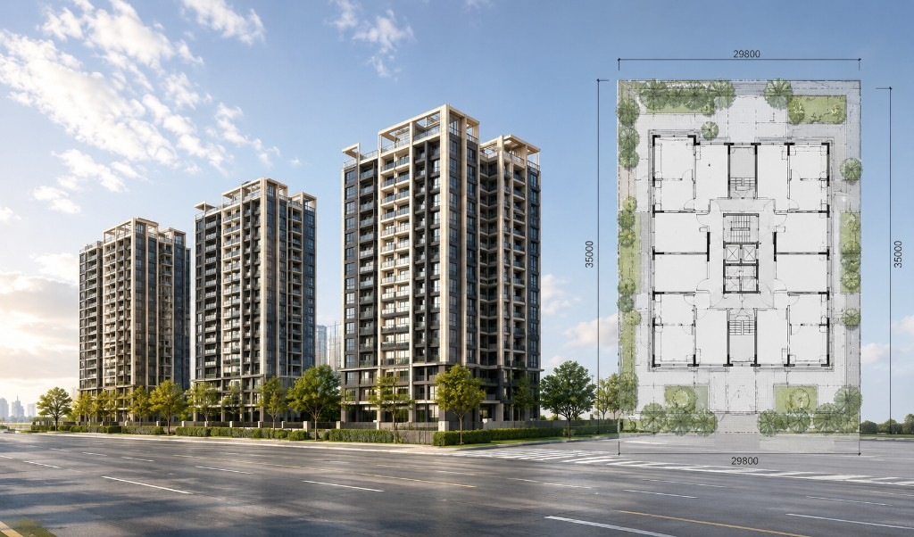
無法想像未來生活
平面圖與模型難以呈現真實空間感，客戶難以想像居住環境。

平面與口述難以承載完整體驗，現場展示又受成本與檔期限制。

平面圖與模型難以呈現真實空間感，客戶難以想像居住環境。
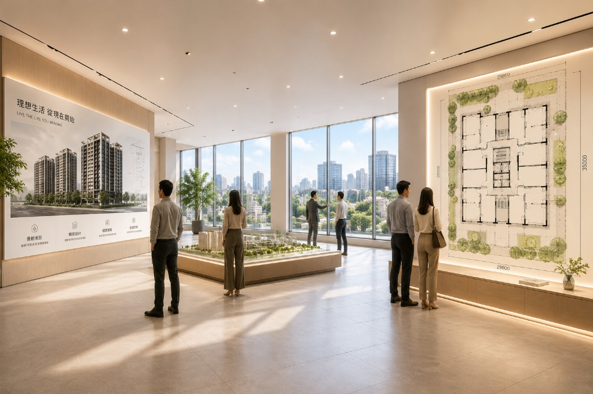
樣品屋數量有限，無法滿足多戶型與不同樓層的展示需求。
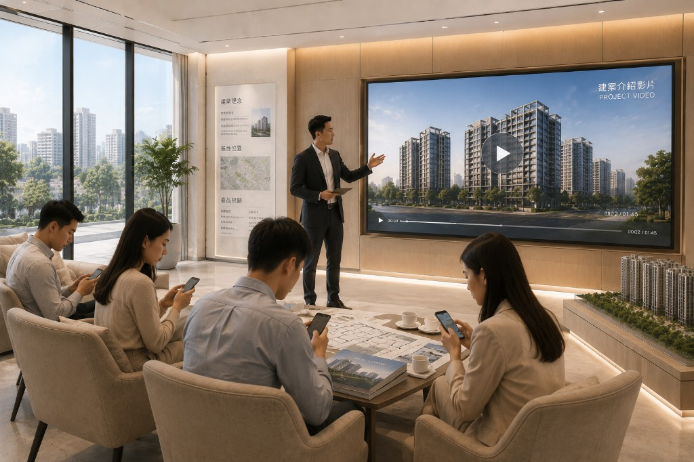
只能依賴影片與靜態圖，缺乏互動，客戶容易失去興趣。
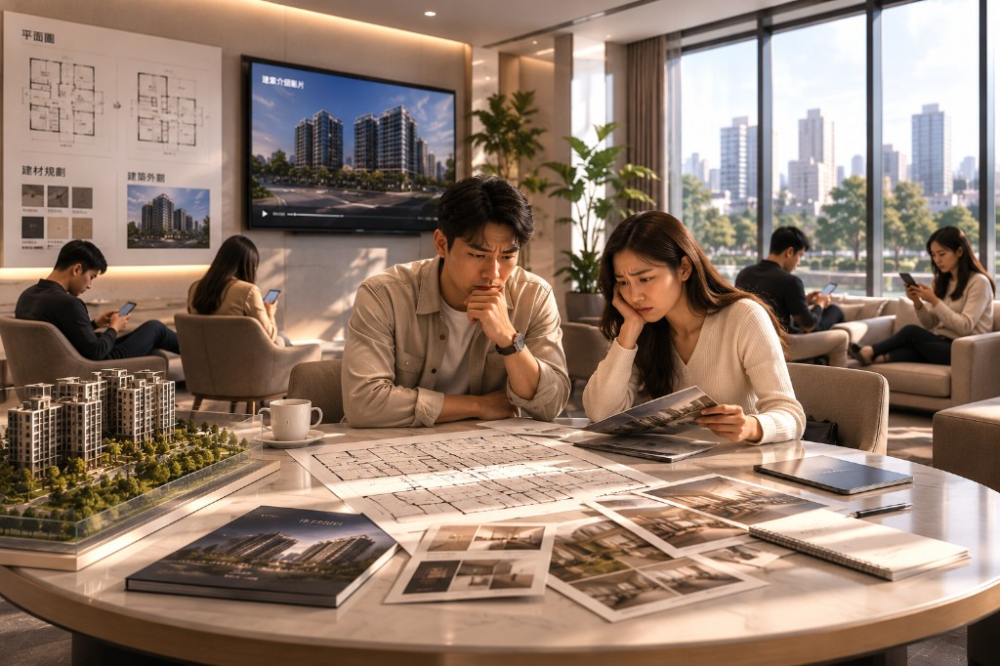
資訊不完整，客戶需要更多時間才能做出購買決定。
從建模到現場與行銷延伸，一條龍串起體驗與轉換。
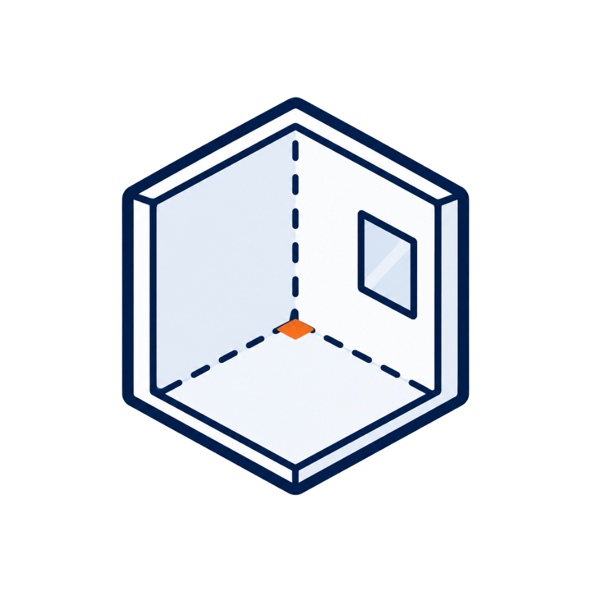
高還原 3D 建模依設計圖 1:1 建模，真實呈現
材質、光影與空間情境。
客戶可自由走動、360° 探索，彷彿置身未來的家。
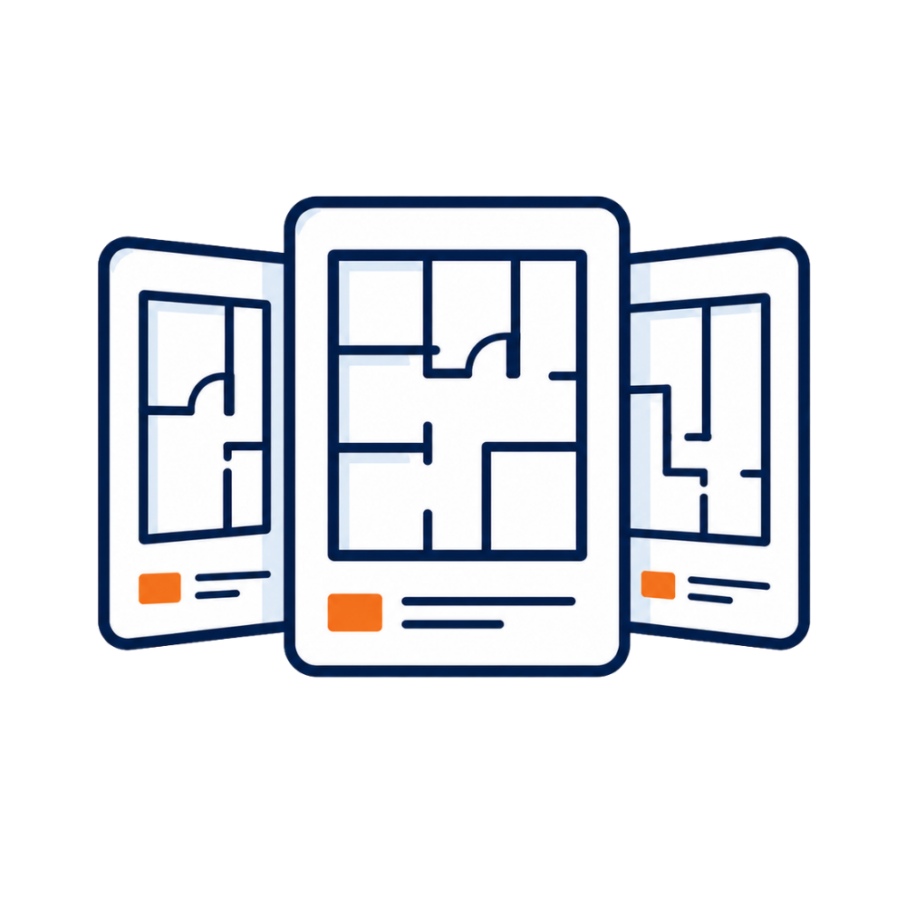
多戶型一次展示不同格局、樓層、朝向一次體驗，提升比較效率。
一套 3D 軟體，產出多種圖像、影片、短影音，強化廣告曝光。
強化客戶代入感與信任度，加速決策，提升成交機率。
依案場條件組合導覽、環景、熱點與 VR，讓每次帶看都有話題。
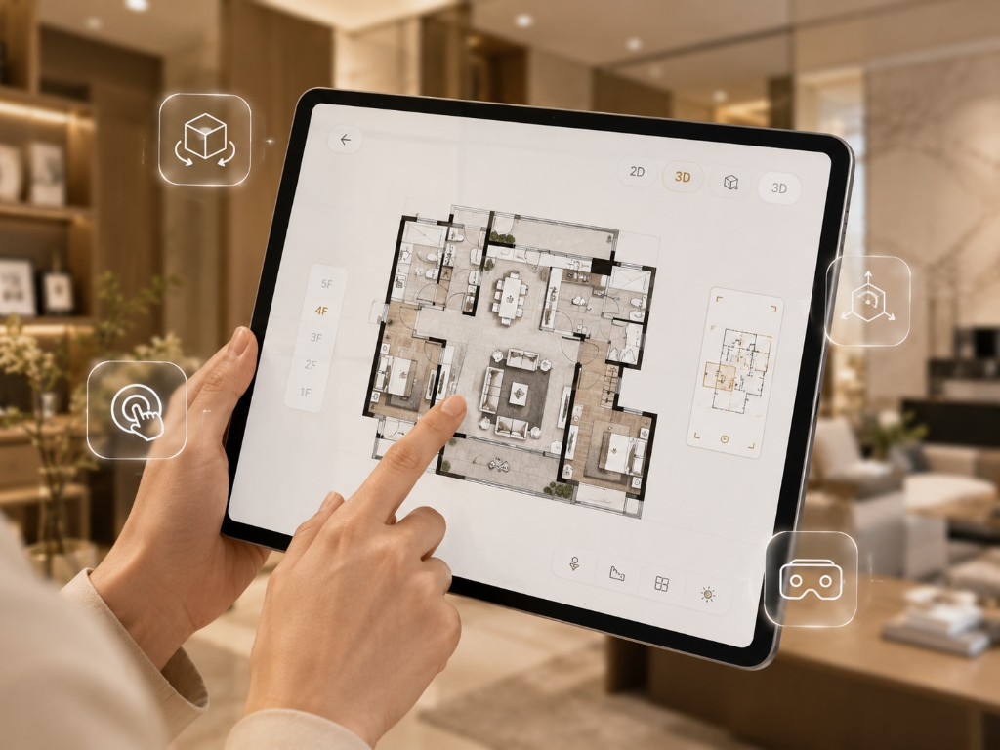
樓層、視角切換與動線導覽，現場帶看更順。
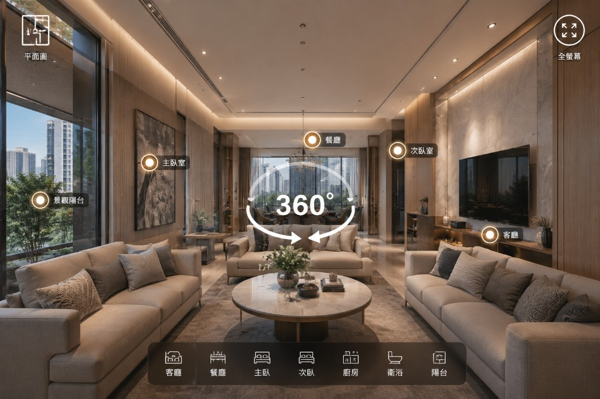
拖曳環視與熱點跳轉，沉浸感受每個角落。
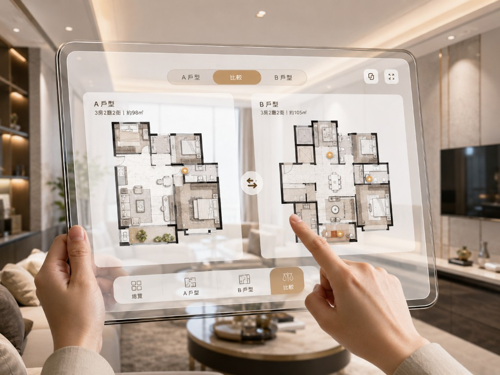
格局並排對照，坪數與配置一眼看懂。
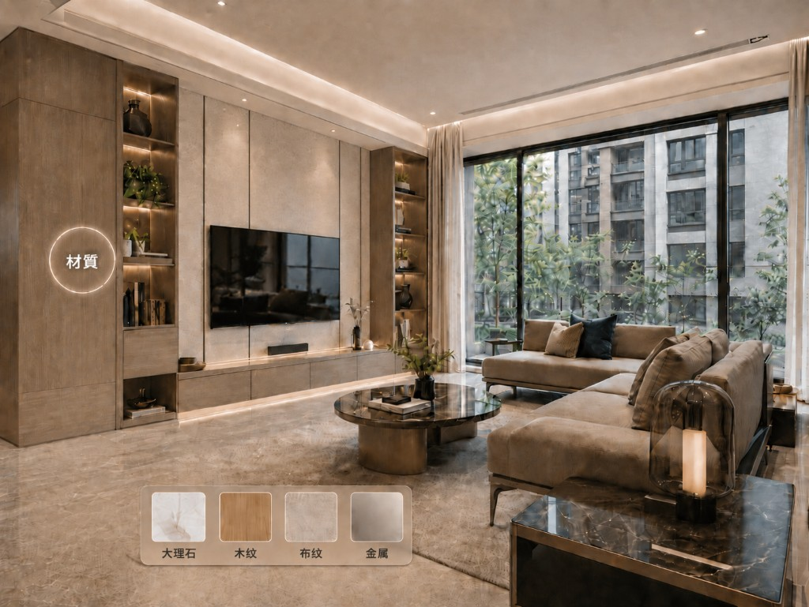
材質、收納等重點一鍵展開，加深印象。
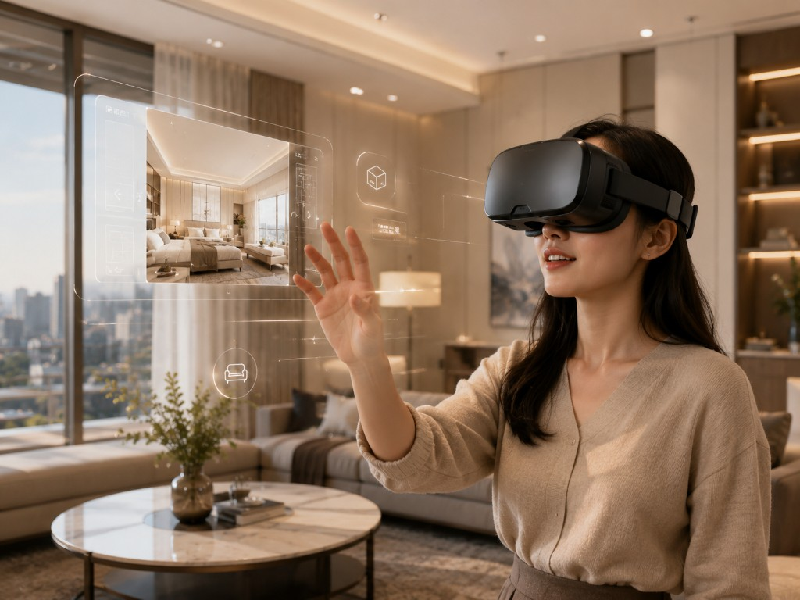
頭戴裝置走入未來的家，臨場感與話題兼具。
同一套模型可輸出多種格式，支援現場、線上與社群通路。
戶外看板、DM、官網與銷控表板
電視、YouTube、社群廣告
IG、FB、TikTok 等短格式露出
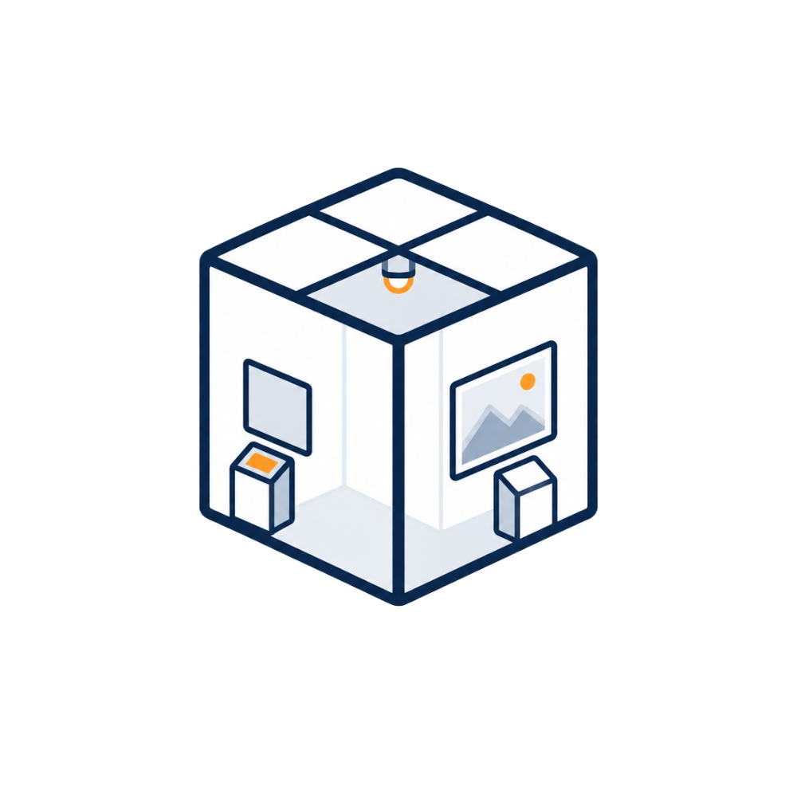
銷售中心、線上導覽連結
展場、案場體驗區
以下精選實際建案、3D 視覺與環景作品，呈現建案銷售可延伸的展示方式。
建案端在導入 3D 與互動展示前，最常確認的項目。